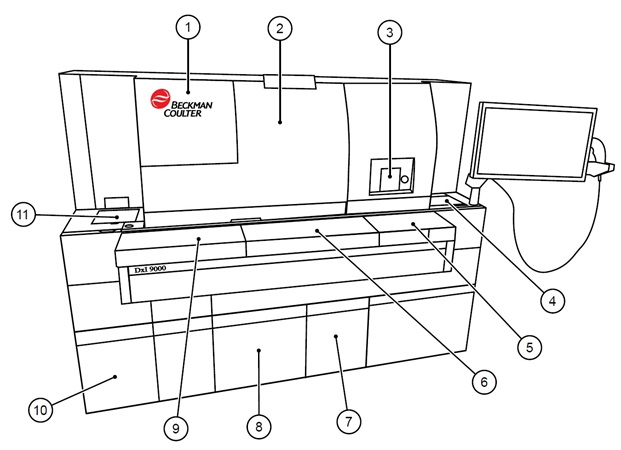
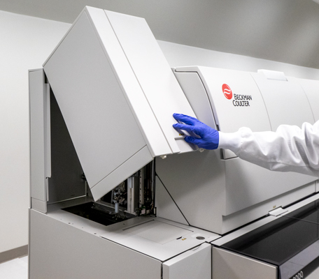
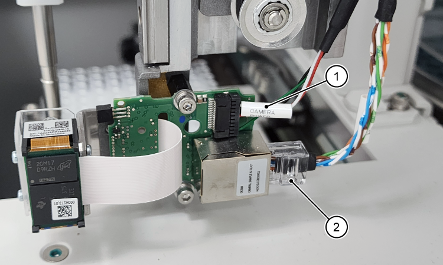
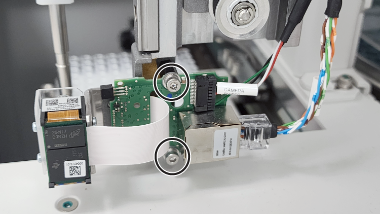
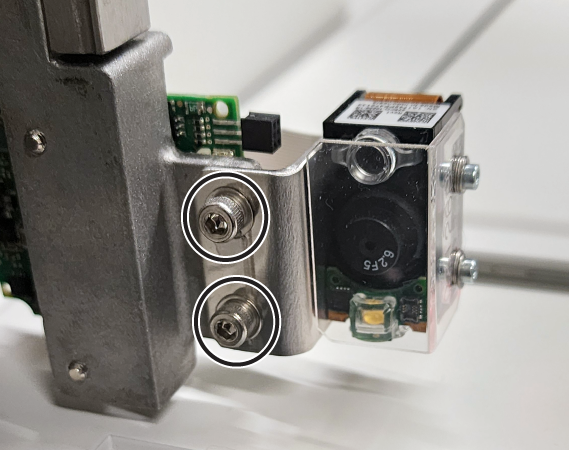

This topic includes information about how to replace the aliquot sample pipettor camera.
Safety Reminder
Servicing the DxI 9000 instrument involves potential risks for pinch and puncture, electrical shock, and exposure to hazardous materials. You must mitigate these risks by taking appropriate countermeasures. See
Safety for more information.
Tools
To replace the camera, you will need a M2.5 hex screwdriver.
Figure 355: Locations of Doors, Drawers, and Covers on the Instrument

1
RV cover
2
Center cover
3
Substrate door
4
Reagent cover
5
Storage compartment
6
Sample handler input area cover
7
Wash buffer drawer
8
Waste drawer
9
Sample handler output area
10
Tip tray waste drawer
11
Tip feeder cover
Open the left-side cover over the DispoTip Stocker module.
Figure 356: Left-side Cover over DispoTip Stocker module

Find the aliquot sample pipettor.
Figure 357: Aliquot and Precision Sample Pipettor Locations
1
Aliquot sample pipettor
2
Precision sample pipettor
Move the aliquot sample pipettor over to the tip supply.
Note: If the pipettor mandrel has fallen due to a loss of power, move it up by the motor hub to prevent damage or slippage.
Find the aliquot sample pipettor camera.
Figure 358: Aliquot Sample Pipettor Camera and Backlight
1
Backlight
2
Camera
Disconnect the Ethernet and camera power connectors from the printed circuit board (PCB) for the camera.
Figure 359: Aliquot Sample Pipettor Printed Circuit Board (PCB) Connectors

1
Camera power connector
2
Ethernet connector
Use the M2.5 hex screwdriver to remove the screws that hold the PCB to the pipettor arm.
Note: The screws that attach the PCB to the pipettor arm include plastic washers.
Figure 360: Aliquot Sample Pipettor Camera PCB Screws and Washers
1
Plastic washer
2
Screw
Figure 361: Aliquot Sample Pipettor Camera PCB Screws

Remove the two screws that hold the camera mount to the pipettor arm.
Figure 362: Aliquot Sample Pipettor Camera Mount Screws

Align the new PCB for the camera to the screw posts on the pipettor arm. Be sure to place the plastic washers onto the screw posts. Use the M2.5 hex screwdriver and the screws to attach the PCB to the arm.
Attach the Ethernet and camera power connectors to the PCB.
Use the M2.5 hex screwdriver and two screws to attach the new camera mount to the pipettor arm.